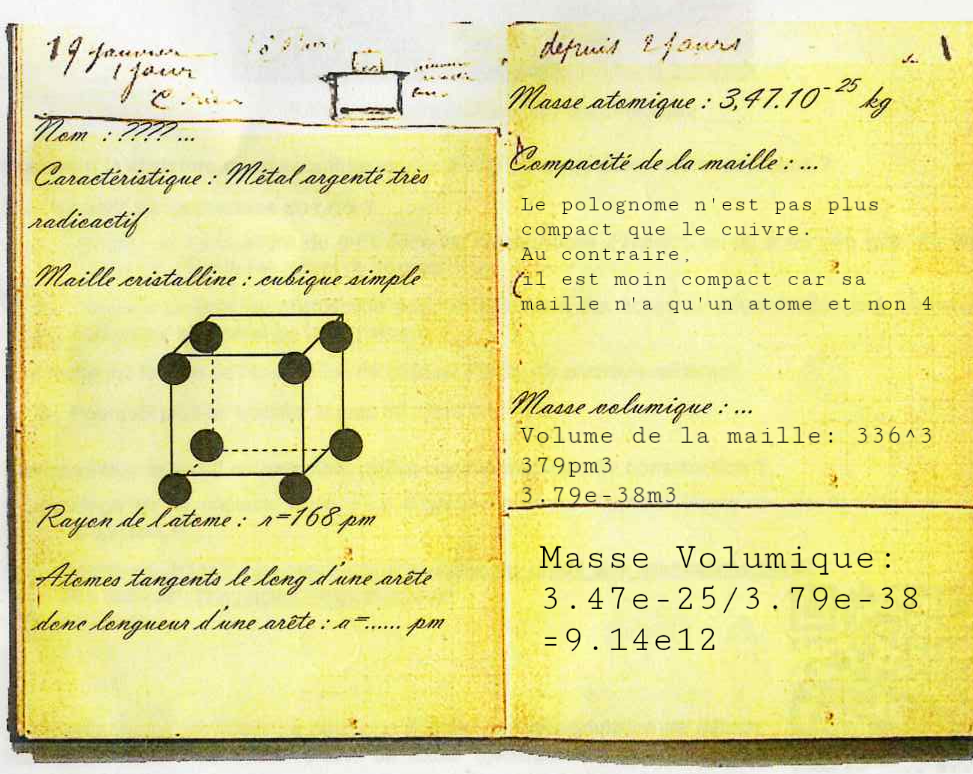

Escale en Pologne:
Pays natal de Marie Curie

Aller à:
Page d'accueil S.V.T.
Grès de Fontainebleau, Seine et Marne
Les huîtres de Marennes Oléron, Charante-Maritime
Ile de Groix, Finistère
A Clermont-Ferrand dans le Puy-de-Dôme
Aller à:
Page d'accueil Physique-Chimie
Marais salants à Noirmoutier
Marais salants à Noirmoutier, bis
Un détour au Etats-Unis
La Pologne, pays natal de Marrie Curie